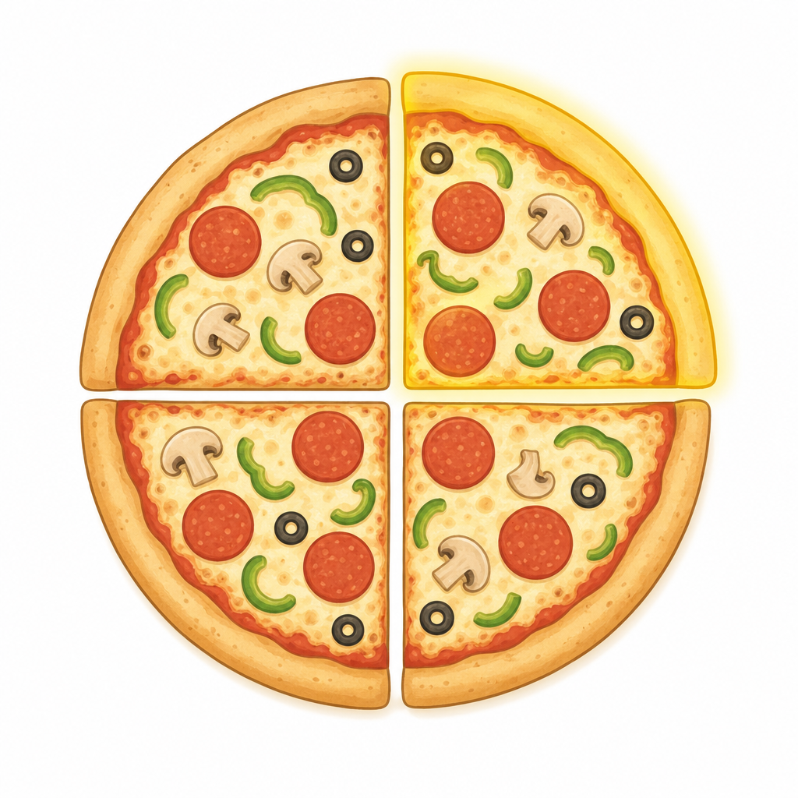

오늘의 미션
피자로 배우는 1/4

피자 한 판이 똑같이 4조각으로 나뉘어 있어요. 노란 조각은 그중 1조각이에요.
오늘은 피자를 나누면서 1/4을 알아볼 거예요.
아래 숫자 4는 전체 조각 수예요. 위 숫자 1은 내가 고른 조각 수예요.
4조각 중 1조각은 몇 분의 몇일까요?
맞으면
좋아요. 전체 4조각 중 1조각이니까 1/4이에요.
헷갈리면
헷갈릴 땐 이렇게 생각해요. 전체가 몇 개인지 먼저 세고, 내가 가진 것이 몇 개인지 나중에 세요.
오늘 내용은 어땠나요?
다음 미션
다음 미션에서는 2조각을 고르면 2/4가 되는지 알아볼 거예요.